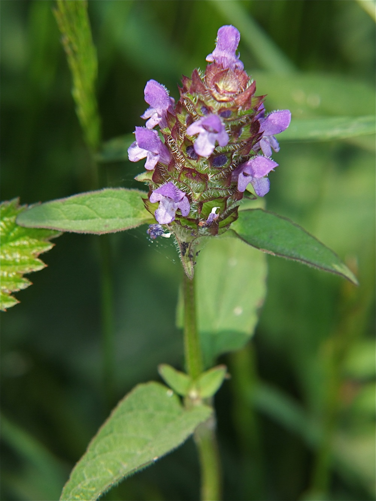
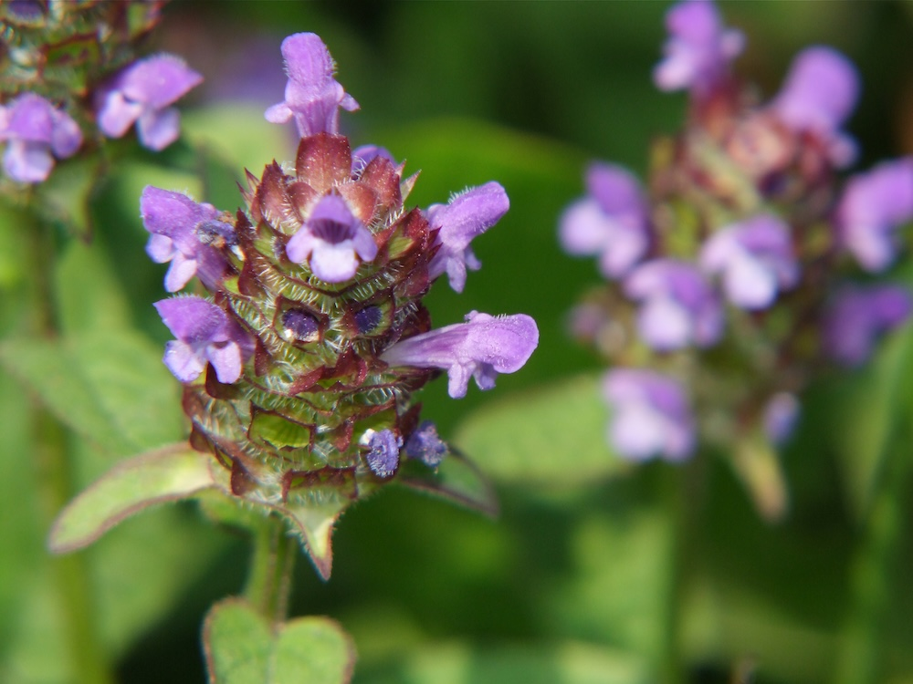

Heilpflanze mit Selbstheilungs-Image
Der englische Name „self-heal“ und der lateinische „prunella“ verweisen auf die traditionelle Anwendung: Die Braunelle galt als selbstheilende Pflanze. Im Mittelalter wurde sie für Wundheilung, Halsschmerzen und Mundentzündungen verwendet. Moderne Forschung bestätigt: Sie enthält tatsächlich entzündungshemmende und antibakterielle Stoffe (Rosmarinsäure, Triterpene). Eine der wenigen Volksheilpflanzen, deren Wirkung wissenschaftlich gestützt ist.
Klein, aber stark
Die Braunelle wirkt unscheinbar — niedrig, kompakt, oft im Rasen versteckt. Aber sie ist eine erstaunlich zähe Pflanze: Sie übersteht Mahd, Tritte, Trockenheit. Mit ihren ausläuferartigen Stängeln breitet sie sich langsam aber stetig aus. Im Spätsommer, wenn andere Wiesenblumen verblüht sind, bietet sie wertvollen Nektar für Bienen und Schmetterlinge.